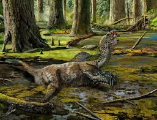
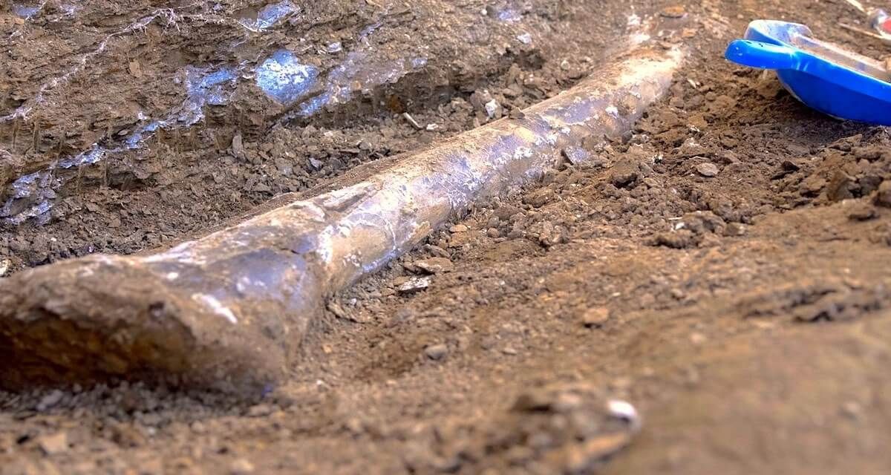
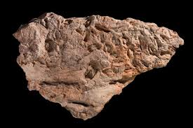
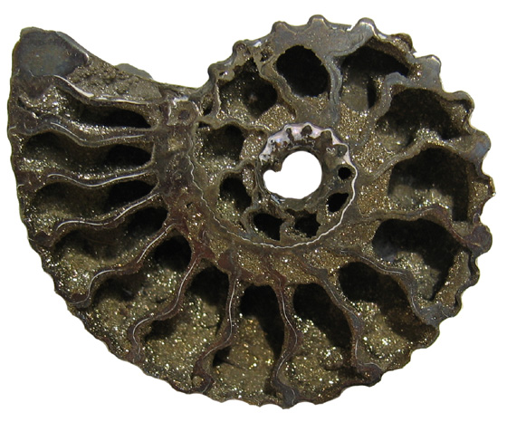
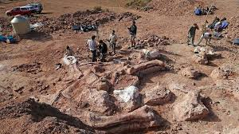

Volunteering with Dinosaur Highlights Museum provides you with the unique opportunity to gain hands on and behind-thescenes access to private collections and even build professional skills like curation or research! We believe in serving our community, and it is a great way to give back to those around you and contribute to our community heritage.
We expect our helpers to be dependable and willing to support our organization with a commitment to a set schedule that we set for you.
To properly engage with and enhance the experience for our visitors and customers, we are always on the look out for those who love to talk to others, have a smile on their face, and have an enthusiasm for learning.
As an institute that supports education and research we hold ourselves to a professional standard. With this in mind we work in a respectful and professional manner. This includes proper appearance and attitude to represent our museum well.

An organism dies and its remains settle on the ground or water floor.

Sediment quickly covers the remains, protecting them from decay.

Layers of sediment build up, applying pressure over time.

Minerals replace organic material, turning it into rock.

Weathering exposes the fossil, allowing it to be discovered.